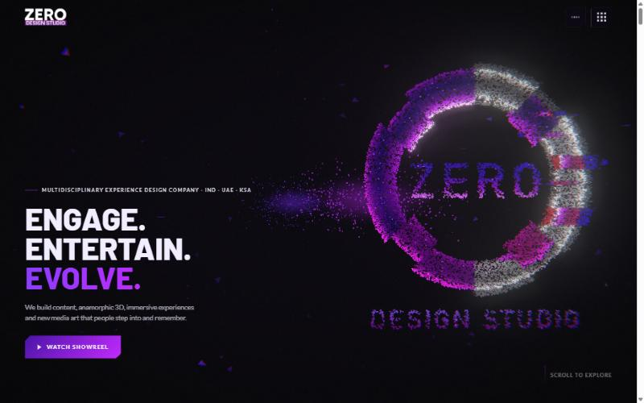
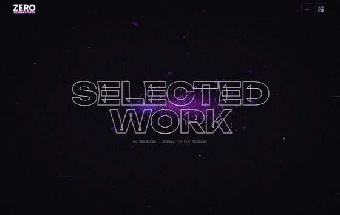
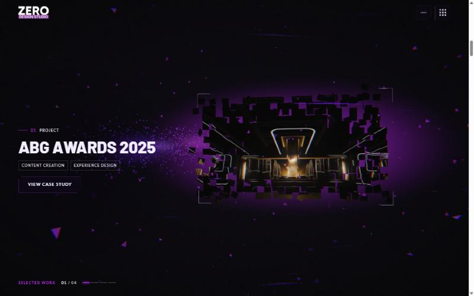
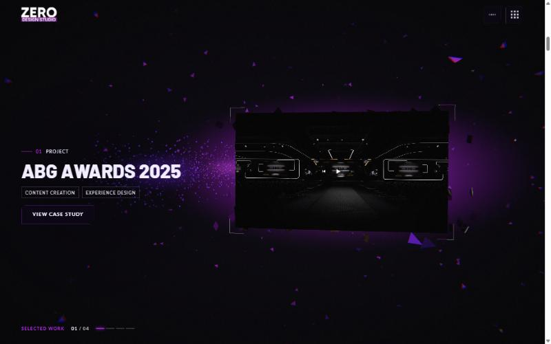
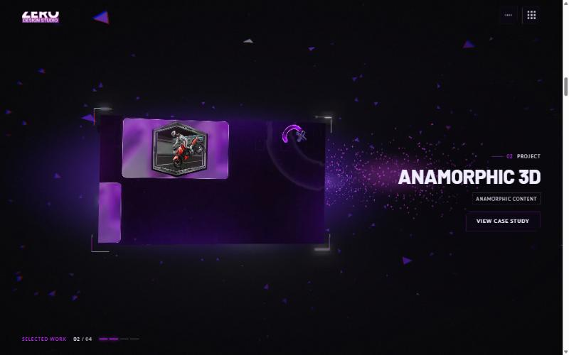
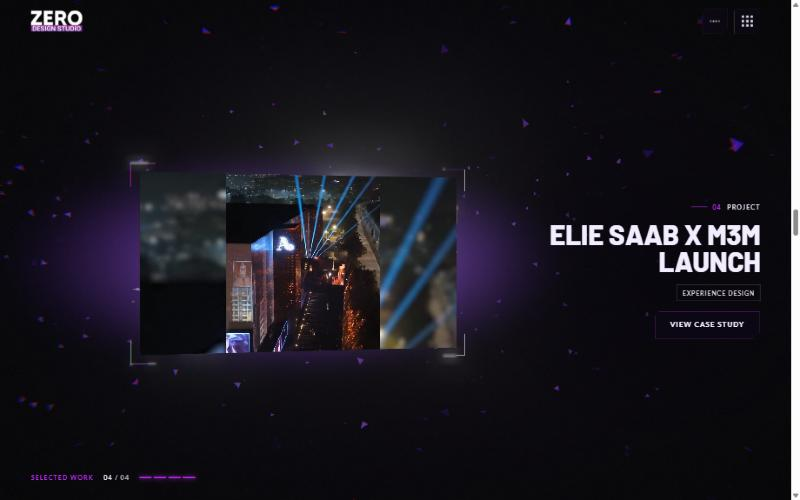
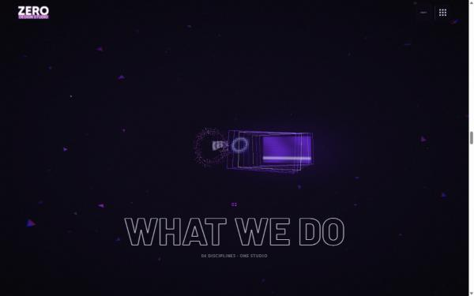
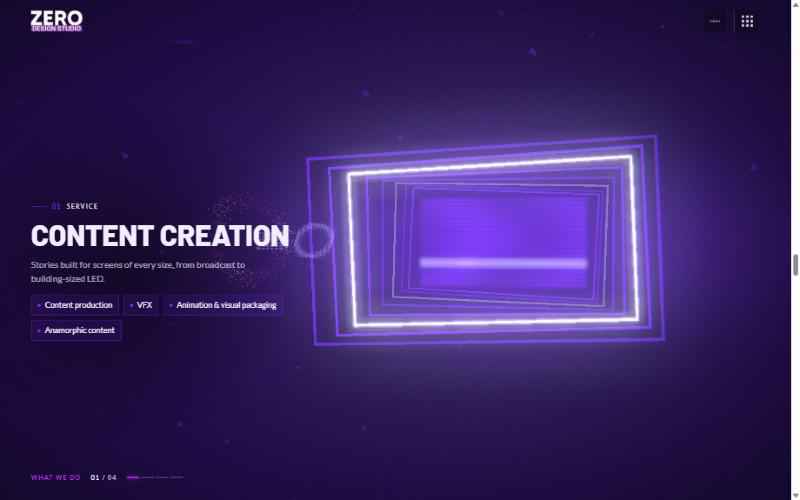
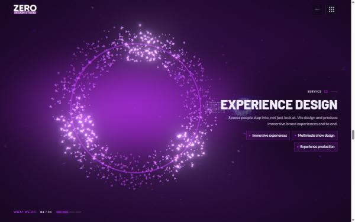

Key frames of the scroll journey, desktop then mobile, captured from the running prototype. The live build moves continuously between these frames; run npm run dev to see the full experience.
Desktop: one continuous flight

01 Hero. Logo assembles from glitch shards on load; no loader.

02 Selected Work. Intro the camera flies through.

03 Approach. Tiles resolve into the project's YouTube frame.

04 Project parked. Copy pinned, HUD 01/04.

05 Anamorphic 3D. Sides alternate; live muted preview on the plane.

06 Elie Saab × M3M. Video already playing on arrival.

07 What We Do. The four zones line up ahead.

08 Content Creation. Corridor of screens.

09 Experience Design. Shard portal (glow since softened).